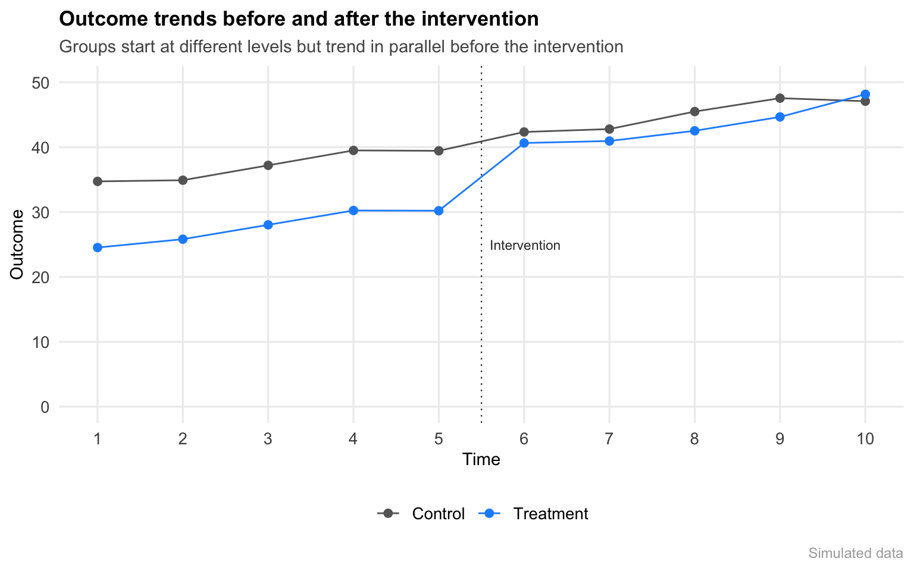
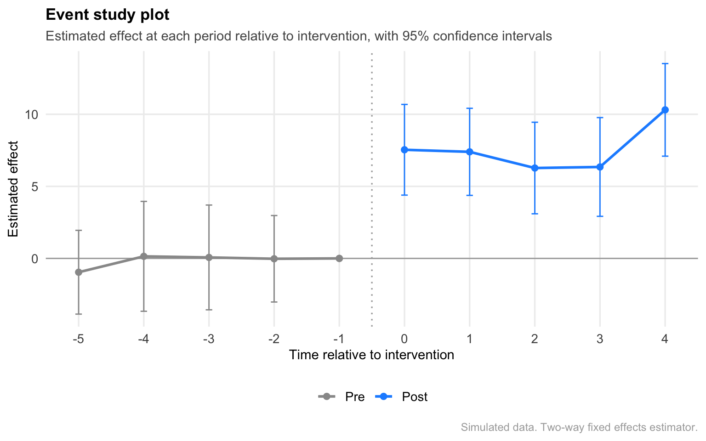

Difference-in-Differences
A methods explainer with a simulated example
Causal Inference
Simulation
Event Study
The problem with simple comparisons
Suppose a policy rolls out in some states but not others and you want to know whether it worked. The two most obvious approaches both fall short.
You could look at how outcomes changed in states that adopted the policy, before versus after. But outcomes change for all kinds of reasons. If things were already improving, you’d see movement even if the policy did nothing.
Or you could compare adopting states to non-adopting states after the fact. But the places that adopted it may have been systematically different to begin with. Any difference you observe could reflect that, not the policy.
Difference-in-differences uses both comparisons simultaneously.
The DiD idea
Find a group that didn’t get the treatment. Use how their outcomes changed over the same period as an estimate of the counterfactual, or what would have happened to the treated group had it never received the intervention. Then subtract.
\[\hat{\delta} = (\bar{Y}_{treat, post} - \bar{Y}_{treat, pre}) - (\bar{Y}_{control, post} - \bar{Y}_{control, pre})\] Here, \(\bar{Y}\) is the mean outcome, subscripts denote group and period, and the DiD equation is read as: the within-group change for treated units, minus the within-group change for control units
The table below illustrates what this could look like in practice. Suppose the outcome increased by 15 units in the treatment group and by 7 units in the control group. The DiD estimate is the difference between those two changes:
| Pre | Post | Change | |
|---|---|---|---|
| Treatment | 20 | 35 | +15 |
| Control | 30 | 37 | +7 |
| Difference-in-differences | 15 − 7 = 8 |
An 8-unit DiD estimate means the outcome rose 8 units more in treatment states than in control states over the same period. This is the part of the change we can’t attribute to trends that were already underway.
The parallel trends assumption
DiD estimates rest on a central claim — parallel trends. In the absence of the intervention, treated and control groups would have continued trending in parallel.
The control group is standing in for the counterfactual, what would have happened to the treated group had it never received the intervention. If the groups were already moving differently before treatment, the control group is a poor stand-in and the DiD estimate can be misleading.
The diagrams below illustrate the difference.
Parallel trends
Same pre-treatment slopes. The control group provides a plausible counterfactual.
Violation
Treated was already rising faster before the intervention. The control group is not a credible counterfactual.
In the left panel, both groups are changing at the same rate before treatment. The control group trajectory provides a reasonable estimate of what would have happened to the treated group in the absence of the intervention.
In the right panel, the treated group was already changing more quickly before treatment occurred. Even if no intervention had happened, the two groups would likely have continued diverging, making it difficult to attribute post-treatment differences to the intervention itself.
This assumption is fundamentally untestable. We can’t observe what would have happened to treated units if they had never received treatment. What we can do is look for evidence that supports or undermines the assumption.
To make that idea concrete, I’ll use a simple simulated policy rollout for the rest of this post.
A simulated example
The simulated data below has 50 states observed over 10 periods. 25 adopt the policy at period 6. The remaining 25 never do. The true effect is 8 units (we know this because we simulated it).
Notice that the groups start at different levels. That’s fine. DiD doesn’t require treated and control groups to start in the same place. It requires them to be moving at the same rate before treatment.
What you’re looking for is parallel slopes.
I think the trend plot is useful for building intuition, but applied analyses tend to estimate DiD using regression models. An event study extends that framework by estimating a separate effect for each period before and after treatment.
Event study plots
Looking at those period-specific estimates lets us see whether treated and control units were already diverging before treatment and whether the effect changes over time after adoption.
The model includes state and time fixed effects. State fixed effects account for stable differences between states, while time fixed effects account for broader trends affecting all states in a given period.
Show code
core_es <- core %>%
mutate(
time_to_treat = if_else(treated, time - treat_at, 0),
state_id = as.integer(state_id)
)
es_model <- feols(
outcome ~ i(time_to_treat, treated, ref = -1) | state_id + time,
data = core_es,
cluster = ~state_id
)
es_df <- as.data.frame(coeftable(es_model)) %>%
tibble::rownames_to_column("term") %>%
filter(grepl("time_to_treat", term)) %>%
mutate(
time = as.integer(gsub("time_to_treat::(.+):treated", "\\1", term)),
conf.low = Estimate - 1.96 * `Std. Error`,
conf.high = Estimate + 1.96 * `Std. Error`,
period = factor(
if_else(time < 0, "Pre", "Post"),
levels = c("Pre", "Post")
)
) %>%
rename(estimate = Estimate)
# add reference period manually — estimate is zero by construction
ref_row <- data.frame(
term = "reference",
estimate = 0,
conf.low = NA,
conf.high = NA,
time = -1,
period = "Pre"
)
es_df <- bind_rows(es_df, ref_row) %>%
arrange(time)
The pre-treatment estimates remain close to zero, providing evidence consistent with parallel trends. After treatment, the estimates shift upward and stabilize around the true effect built into the simulation.
Researchers sometimes formally test whether the pre-treatment event-study coefficients differ from zero. I don’t put much weight on those tests. A non-significant result isn’t evidence that parallel trends holds. It’s often just an underpowered test failing to detect a real violation. What I care about is whether the pre-treatment estimates are small, stable, and free of any obvious trend.
The treatment effect estimate
The event study shows little evidence of pre-treatment differences and a fairly stable treatment effect after adoption. If we’re willing to assume parallel trends, we can summarize that effect with a single DiD estimate.
Show code
did_model <- feols(
outcome ~ treated * post | state_id + time,
data = core
)
# pull out avg treatment effect
att <- coef(did_model)["treatedTRUE:postTRUE"]Estimated treatment effect: 7.7
In this simulation, the policy increased the outcome by about 7.7 units among treated states relative to what we would have expected based on changes in the control states. Note that the estimated value is very close to the true effect of 8 units that was built into the simulation.
A single DiD estimate provides a useful summary of the average treatment effect. The event study above complements that estimate by showing whether the parallel trends assumption appears plausible and whether the effect changes over time.
When adoption is staggered
The setup above assumes all treated states adopt at the same time. That’s rarely true. Policies roll out at different times in different places, and when they do, the standard two-way fixed effects estimator can mislead. Earlier-treated units end up serving as controls for later-treated ones, which works only if those early adopters aren’t already experiencing effects.
Several estimators address this, including Callaway and Sant’Anna (2021), which estimates effects separately by adoption cohort before aggregating.
What this can and can’t tell you
DiD identifies the average treatment effect on the treated (ATT), or the average effect of the policy for the units that actually adopted it. This is not the same as the average effect in the full population, and it may not generalize to units that didn’t adopt the policy.
The estimate is only as credible as the parallel trends assumption. And parallel trends isn’t a statistical claim, it’s a claim about the world. Why would these groups have continued on the same trajectory? What might have changed simultaneously for treated but not control units? Are there spillovers? Those questions don’t have statistical answers. They require knowing something about the setting.
Code for this explainer is available on GitHub.